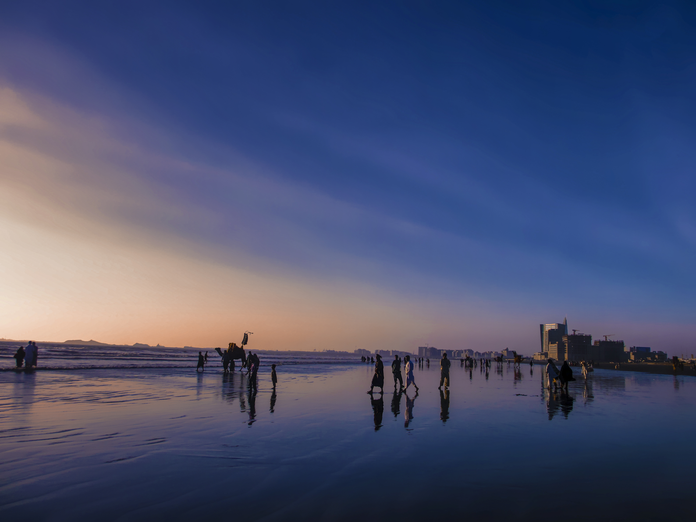
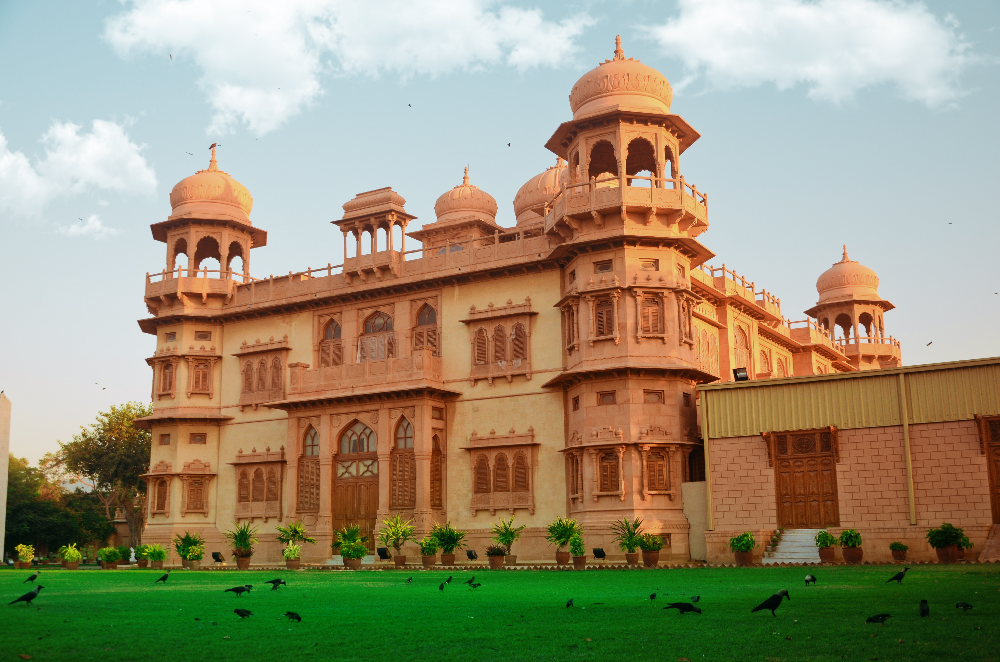
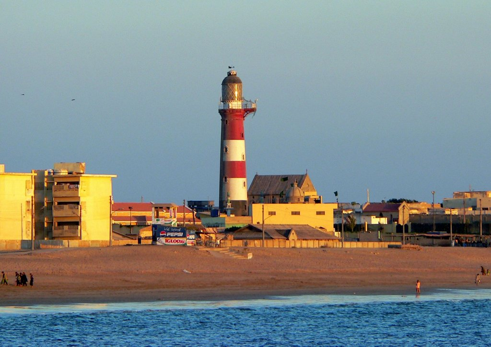

The City of Lights
Karachi is Pakistan's largest city, its main port, and its economic engine. Home to over 15 million people representing every ethnicity, language, and culture in the country, Karachi is a true melting pot. Originally a small fishing settlement, it grew rapidly under British colonial rule and became a major commercial hub.
The city sits on the coast of the Arabian Sea and offers beaches, seafood, colonial architecture, and some of Pakistan's most diverse street food.

Top Attractions

Mazar-e-Quaid
The magnificent mausoleum of Muhammad Ali Jinnah, founder of Pakistan — a revered national monument.

Clifton Beach
Karachi's most popular beach, lined with food stalls, camel rides, and views of the Arabian Sea.

Mohatta Palace
A stunning pink sandstone colonial palace now serving as an art museum and cultural centre.

Manora Island
A historic island near Karachi Harbour, accessible by boat, with a lighthouse and old colonial buildings.